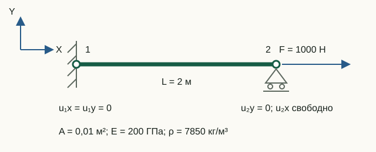
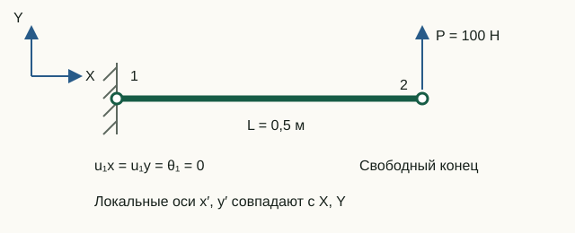

От узловых перемещений к усилиям
Решатель сначала находит глобальный вектор перемещений u. Чтобы интерпретировать состояние отдельного элемента, нужно выбрать принадлежащие ему компоненты, перейти в локальные оси и применить ту же локальную матрицу жёсткости, которая участвовала в сборке.
Три шага восстановления
Для элемента e функция recoverElementResults выполняет:
ue = u(dofse)
ulocal = Te ue
qlocal = klocal ulocal
Первое выражение собирает компоненты по element.dofs, а не по номерам узлов. Второе переводит глобальные перемещения в собственные оси элемента. Третье даёт обобщённые узловые силы, действующие на элемент и сопряжённые его локальным СС.
elementDisplacements = u(element.dofs);
localDisplacements = element.transformation * elementDisplacements;
localEndForces = element.localStiffness * localDisplacements - feLocal;Что возвращает статический расчёт
solveStatic помещает массив elementResults в структуру результата. Запись каждого элемента содержит:
| Поле | Содержание | Система координат |
|---|---|---|
globalDOFs | адреса компонентов элемента в полном векторе | глобальная |
localDisplacements | перемещения и повороты концов | локальная |
localEndForces | обобщённые силы и моменты на концах | локальная |
axialStrain | постоянная осевая деформация | вдоль локальной оси x |
axialStress | осевое напряжение Eε | вдоль локальной оси x |
axialForce | осевая сила Aσ | растяжение положительно |
Стержень типа 112
Локальный порядок перемещений стержня равен [u1; v1; u2; v2]. Осевая деформация, напряжение и сила вычисляются по формулам:
ε = (u2 − u1)/L, σ = Eε, N = Aσ
Положительные ε, σ и N означают растяжение, отрицательные — сжатие. При растяжении локальные концевые усилия имеют противоположные знаки:
qlocal = [−N; 0; N; 0]
Это не противоречие: скаляр N описывает состояние стержня, а компоненты q показывают направления сил на его двух концах.
Рама типа 113
Для рамного элемента локальные векторы имеют согласованный порядок:
ulocal = [u1; v1; θ1; u2; v2; θ2]
qlocal = [N1; V1; M1; N2; V2; M2]
Знак каждой силы или момента совпадает с положительным направлением сопряжённой локальной СС. Например, для горизонтальной консоли длиной L и силы P в положительном направлении локальной оси y на свободном конце:
qlocal = [0; −P; −PL; 0; P; 0]
localEndForces содержит результат klocalulocal − feLocal. Для элементной нагрузки из этого произведения вычитается суммарный согласованный вектор feLocal; он доступен как equivalentLocalLoadVector. Поля axialStress и axialForce описывают только осевое состояние; эпюры изгибающих напряжений функция не строит.
Усилия элемента и реакции — не одно и то же
Реакции вычисляются в глобальных координатах для всей модели:
R = K u − F
Концевые усилия относятся к одному элементу и записаны в его локальных осях. В общем узле вклады нескольких элементов сначала поворачиваются обратно (транспонированная T) и суммируются:
K u = Σ TeT qlocal,e
Затем из внутренних узловых сил вычитается внешняя нагрузка. Поэтому localEndForces нельзя без преобразования и сборки называть реакциями. Они совпадают напрямую только в специальных случаях — например, у единственного горизонтального элемента на закреплённом конце, если там нет приложенной узловой нагрузки.
Лабораторная 07. От перемещений к напряжениям и концевым усилиям
Цель — независимо проверить результаты двух задач через растяжение стержня и равновесие консоли.


Исходные данные и обозначения
Для стержня используются данные схемы лабораторной 03: L = 2 м, A = 0,01 м², E = 200 ГПа, F = 1000 Н. Для консоли L = 0,5 м, A = 10⁻⁴ м², E = 200 ГПа, I = 0,33·10⁻⁸ м⁴, P = 100 Н вверх. Обе модели горизонтальны, их локальные оси совпадают с глобальными.
До запуска: расчёт на бумаге
- Для стержня найдите σ = F/A, ε = σ/E, ΔL = εL и N = σA.
- Для консоли запишите равновесие по Y и по моменту относительно узла 1. Найдите R₁y и M₁ с учётом направления силы на схеме.
Запуск в Octave
Выполните из корня проекта. Готовая функция печатает результаты; для этой работы изменять её код не требуется.
addpath(pwd);
setup;
addpath(fullfile(pwd, "reference", "examples"));
r = example_07_result_recovery();Работа с результатами
- Из
Truss local displacements [u1; v1; u2; v2]найдите u₂ − u₁ и разделите на длину. Сверьте деформацию, напряжение и продольную силу с напечатаннымиTruss strain,stressиaxial force. - В
Truss local end forcesнайдите две осевые компоненты. Объясните, почему их знаки противоположны, хотя продольная сила N положительна и стержень растянут. - Подпишите шесть компонент
Frame local end forces [N1; V1; M1; N2; V2; M2]с единицами Н или Н·м. Сверьте первые три сFrame support reactions, последние три — с нагрузкой свободного конца. - Проверьте равновесие: V₁ + V₂ = 0 и M₁ + M₂ + V₂L = 0. По линейности предскажите знаки деформации, напряжения, усилий и реакций при обращении нагрузки.
Стержень: ΔL = 10⁻⁶ м, ε = 5·10⁻⁷, σ = 100 кПа, N = 1000 Н; концевые силы [−1000; 0; 1000; 0] Н. Консоль: [0; −100; −50; 0; 100; 0], где третья и шестая компоненты измеряются в Н·м. Это компоненты узловых концевых сил в положительных локальных осях, а не готовые знаки эпюр в сечениях.
Что включить в отчёт
Обе схемы, ручные расчёты, таблицу «аналитически — Octave — единицы» и два уравнения равновесия консоли; объяснение знаков концевых усилий.
Все лабораторные одной командой
run_reference_examples последовательно запускает семь примеров и возвращает их результаты в полях с именами функций:
addpath(pwd);
setup;
addpath(fullfile(pwd, "reference", "examples"));
results = run_reference_examples();Для тихой проверки используйте run_reference_examples(false). Функция запуска определяет корень репозитория по собственному файлу, поэтому после добавления каталога примеров в путь не зависит от текущего рабочего каталога. Исключения не перехватываются: первая нарушенная проверка немедленно останавливает запуск.
Исходный код главы
recoverElementResults.m— выбор СС, переход в локальные оси и вычисление усилий;solveStatic.m— реакции и включение результатов элементов в ответ;tests/test_result_recovery.m— регрессионные проверки стержня, поворота и консоли;example_07_result_recovery.m— исполняемая лабораторная;run_reference_examples.m— единая точка запуска лабораторных.
Теория
- Young W. Kwon, Hyochoong Bang, The Finite Element Method Using MATLAB, с. 201 для стержня и с. 261 для балочного элемента.
- R. D. Cook, D. S. Malkus, M. E. Plesha, Concepts and Applications of Finite Element Analysis, 3-е изд., с. 113.
Эпюры загруженных элементов
При суммарных локальных интенсивностях qx, qy и концевом векторе f: N(x)=−f₁−qx·x, V(x)=−f₂−qy·x, M(x)=−f₃+f₂·x+qy·x²/2. Постпроцессор учитывает внутренний экстремум M. Скалярные axialStrain, axialStress, axialForce и возвращаемое StressCalc напряжение обозначают средние осевые значения, а не изгибные напряжения. Геометрия перемещений сохраняет интерполяцию конечного элемента.
Результаты с элементными нагрузками экспортируются в JSON v2; старые результаты v1 поддерживаются.
MPC
В строке C коэффициент зависимой СС равен +1, ведущих — −c. Невязка раскладывается как r = supportReactions + Cᵀλ; mpcForces = Cᵀλ, mpcMultipliers = λ. На закреплённой ведущей СС опорная реакция равна r минус сила MPC. Для моды r = Kφ − ω²Mφ, силы соответствуют масштабу сохранённой формы. Поле reactions сохраняет полную невязку. JSON v3 маркирует эти величины раздельно.
Подробное описание MPC · JSON v3 · CaseMPCFrame.txt · CaseMPCTruss.txt
Концевые освобождения Mz
В статике localEndForces = Klocal*ulocal − flocal вычисляется по фактическим концевым поворотам; освобождённый момент равен нулю с численным допуском без принудительного обнуления. JSON v4 содержит реестр СС и карты концов. Карточки показывают оба поворота, а временные графики позволяют выбрать элемент, конец и thetaZ. Отсутствующий узловой поворот не отображается как нулевой.
JSON v4 · CaseReleaseStatic · CaseReleaseModal · CaseReleaseTransient